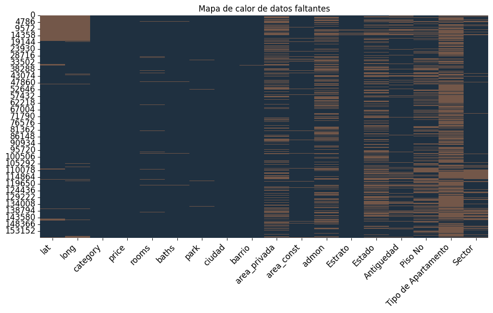

Análisis de datos nulos#
import pandas as pd
import os
import numpy as np
import plotly.express as px
import plotly.graph_objects as go
from plotly.subplots import make_subplots
import missingno as msno
import matplotlib.pyplot as plt
import seaborn as sns
from sklearn.model_selection import train_test_split
from sklearn.metrics import mean_squared_error
from sklearn.pipeline import Pipeline
from sklearn.pipeline import make_pipeline
from sklearn.experimental import enable_iterative_imputer
#enable_iterative_imputer()
from sklearn.impute import IterativeImputer
from sklearn.compose import ColumnTransformer
from sklearn.preprocessing import OneHotEncoder
from sklearn.preprocessing import MinMaxScaler
from fuzzywuzzy import process
import pandas as pd
# Definir la paleta de colores personalizada
custom_colors = ['#1F3040', '#B9CDCA', '#F2C6AC', '#D99982', '#735749']
ventas = pd.read_csv('C:/UNINORTE/VC/Proyecto2/Informe/docs/datos4.csv')
ventas.describe().T
| count | mean | std | min | 25% | 50% | 75% | max | |
|---|---|---|---|---|---|---|---|---|
| lat | 135094.0 | 5.647384e+00 | 2.210987e+00 | 3.254000e+00 | 4.649485e+00 | 4.720665e+00 | 6.205749e+00 | 1.104366e+01 |
| long | 136123.0 | -7.485399e+01 | 8.810261e-01 | -7.657617e+01 | -7.556735e+01 | -7.418215e+01 | -7.406466e+01 | -7.396190e+01 |
| price | 157909.0 | 4.961173e+08 | 4.050359e+08 | 2.000000e+06 | 2.400000e+08 | 3.700000e+08 | 6.000000e+08 | 4.900000e+09 |
| rooms | 153653.0 | 2.983157e+00 | 1.020468e+00 | 1.000000e+00 | 2.000000e+00 | 3.000000e+00 | 3.000000e+00 | 7.000000e+00 |
| baths | 156636.0 | 2.558543e+00 | 1.123930e+00 | 1.000000e+00 | 2.000000e+00 | 2.000000e+00 | 3.000000e+00 | 7.000000e+00 |
| park | 156972.0 | 1.171884e+00 | 9.385208e-01 | 0.000000e+00 | 1.000000e+00 | 1.000000e+00 | 2.000000e+00 | 5.000000e+00 |
| area_privada | 106558.0 | 1.115772e+02 | 6.274762e+01 | 1.000000e+00 | 6.500000e+01 | 9.200000e+01 | 1.410000e+02 | 3.240000e+02 |
| area_const | 151637.0 | 1.126387e+02 | 6.388135e+01 | 1.000000e+00 | 6.500000e+01 | 9.300000e+01 | 1.430000e+02 | 3.250000e+02 |
| admon | 97043.0 | 3.527261e+05 | 2.487091e+05 | 0.000000e+00 | 1.673000e+05 | 2.900000e+05 | 4.910000e+05 | 1.121000e+06 |
| Estrato | 155484.0 | 4.353715e+00 | 1.279689e+00 | 1.000000e+00 | 3.000000e+00 | 4.000000e+00 | 6.000000e+00 | 6.000000e+00 |
| Estado | 91725.0 | 4.501052e+00 | 5.422005e-01 | 3.000000e+00 | 4.000000e+00 | 5.000000e+00 | 5.000000e+00 | 5.000000e+00 |
| Piso No | 96081.0 | 4.254233e+00 | 3.114510e+00 | 1.000000e+00 | 2.000000e+00 | 3.000000e+00 | 5.000000e+00 | 1.600000e+01 |
ventas.info()
<class 'pandas.core.frame.DataFrame'>
RangeIndex: 157909 entries, 0 to 157908
Data columns (total 18 columns):
# Column Non-Null Count Dtype
--- ------ -------------- -----
0 lat 135094 non-null float64
1 long 136123 non-null float64
2 category 157909 non-null object
3 price 157909 non-null float64
4 rooms 153653 non-null float64
5 baths 156636 non-null float64
6 park 156972 non-null float64
7 ciudad 157909 non-null object
8 barrio 157690 non-null object
9 area_privada 106558 non-null float64
10 area_const 151637 non-null float64
11 admon 97043 non-null float64
12 Estrato 155484 non-null float64
13 Estado 91725 non-null float64
14 Antiguedad 130407 non-null object
15 Piso No 96081 non-null float64
16 Tipo de Apartamento 48024 non-null object
17 Sector 125279 non-null object
dtypes: float64(12), object(6)
memory usage: 21.7+ MB
# DataFrame para el análisis de datos nulos y datos únicos
analisis_nulos = pd.DataFrame({
'Conteo': ventas.isnull().sum(), # Conteo de valores nulos
'Porcentaje': (ventas.isnull().sum() / len(ventas)) * 100, # Porcentaje de valores nulos
'Porcentaje_Unicos': (ventas.nunique() / len(ventas)) * 100 # Porcentaje de valores únicos
})
print(analisis_nulos)
Conteo Porcentaje Porcentaje_Unicos
lat 22815 14.448195 45.972047
long 21786 13.796554 25.176526
category 0 0.000000 0.001900
price 0 0.000000 2.576801
rooms 4256 2.695223 0.004433
baths 1273 0.806161 0.004433
park 937 0.593380 0.003800
ciudad 0 0.000000 0.005066
barrio 219 0.138687 3.558379
area_privada 51351 32.519362 0.514853
area_const 6272 3.971908 1.484399
admon 60866 38.544985 3.071389
Estrato 2425 1.535695 0.003800
Estado 66184 41.912747 0.001900
Antiguedad 27502 17.416360 0.003166
Piso No 61828 39.154196 0.010132
Tipo de Apartamento 109885 69.587547 0.005066
Sector 32630 20.663800 0.599079
# Gráfico para el conteo de valores nulos con la paleta de colores especificada
colors = ['#F2C6AC', '#1F3040', '#B9CDCA','#D99982', '#735749'] # Definir la paleta de colores
fig_conteo = px.bar(analisis_nulos, x=analisis_nulos.index, y='Conteo', title='Conteo de valores nulos por columna',
color_discrete_sequence=colors)
fig_conteo.update_layout(xaxis_title='Columnas', yaxis_title='Conteo de valores nulos', xaxis_tickangle=-45)
fig_conteo.show()
# Gráfico para el porcentaje de valores nulos
fig = go.Figure()
# Agregar las barras para el porcentaje de valores nulos
fig.add_trace(go.Bar(
x=analisis_nulos.index,
y=analisis_nulos['Porcentaje'],
name='Porcentaje de Nulos',
marker_color=colors[0] # Asignar el primer color de la paleta
))
# Agregar una línea para el porcentaje de datos únicos
fig.add_trace(go.Scatter(
x=analisis_nulos.index,
y=analisis_nulos['Porcentaje_Unicos'],
name='Porcentaje de Datos Únicos',
mode='lines+markers',
line=dict(color=colors[1]), # Asignar el segundo color de la paleta
marker=dict(color=colors[1]) # Usar otro color para los marcadores
))
# Actualizar el layout para incluir título y nombres de ejes
fig.update_layout(
title='Porcentaje de valores nulos y únicos por columna',
xaxis_title='Columnas',
yaxis_title='Porcentaje (%)',
xaxis_tickangle=-45,
yaxis=dict(
title='Porcentaje (%)',
titlefont_size=16,
tickfont_size=14,
),
legend=dict(
x=0,
y=1.0,
)
)
# Mostrar el gráfico
fig.show()
# Mapa de calor de datos faltantes
plt.figure(figsize=(12, 6))
sns.heatmap(ventas.isnull(), cbar=False, cmap=custom_colors)
plt.title('Mapa de calor de datos faltantes')
plt.xticks(rotation=45, ha='right', fontsize=12)
plt.yticks(fontsize=12)
plt.show()

# Establecer estilo de gráfico
plt.style.use('ggplot')
# Crear el dendrograma de datos faltantes
msno.dendrogram(ventas, figsize=(12, 6))
# Personalizar el gráfico
plt.title('Dendrograma de datos faltantes', fontsize=16)
plt.ylabel('Número de datos faltantes', fontsize=14)
plt.xlabel('Columnas', fontsize=14)
plt.xticks(fontsize=12)
plt.yticks(fontsize=12)
# Mostrar el gráfico
plt.show()
Imputación/eliminación de datos nulos#
Eliminación:#
# Eliminar filas donde 'price' es nulo
ventas = ventas.dropna(subset=['price'])
# Eliminar filas donde 'barrio' es nulo
ventas = ventas.dropna(subset=['barrio'])
Imputación de acuerdo con otras columnas:#
# Actualizar 'area_privada' con los valores de 'area_const' cuando 'area_privada' es nula
ventas['area_privada'] = ventas['area_privada'].fillna(ventas['area_const'])
# Asignar el valor 1 a 'Piso No' donde la categoría es 'casa' y 'Piso No' es nulo
ventas.loc[(ventas['category'] == 'Casa') & (ventas['Piso No'].isnull()), 'Piso No'] = 1
ventas.loc[(ventas['category'] == 'Casa') & (ventas['Tipo de Apartamento'].isnull()), 'Tipo de Apartamento'] = 'No Aplica'
Imputación de acuerdo con la misma columna:#
# Rellenar valores nulos en la columna 'Sector' con 'No Especificado'
ventas['Sector'] = ventas['Sector'].fillna('No Especificado')
# Rellenar valores nulos en la columna 'Tipo de Apartamento' con 'No Especificado'
ventas['Tipo de Apartamento'] = ventas['Tipo de Apartamento'].fillna('No Especificado')
# Asegurarse de que 'Antiguedad' es una columna categórica
if not pd.api.types.is_categorical_dtype(ventas['Antiguedad']):
ventas['Antiguedad'] = ventas['Antiguedad'].astype('category')
# Agregar 'No Especificado' a las categorías de la columna 'Antiguedad'
if 'No Especificado' not in ventas['Antiguedad'].cat.categories:
ventas['Antiguedad'] = ventas['Antiguedad'].cat.add_categories('No Especificado')
# Rellenar valores nulos en la columna 'Antiguedad' con 'No Especificado'
ventas['Antiguedad'] = ventas['Antiguedad'].fillna('No Especificado')
C:\Users\Linda Herrera\AppData\Local\Temp\ipykernel_16712\2807709208.py:2: DeprecationWarning:
is_categorical_dtype is deprecated and will be removed in a future version. Use isinstance(dtype, pd.CategoricalDtype) instead
# Asegurarse de que 'Estado' es una columna categórica
if not pd.api.types.is_categorical_dtype(ventas['Estado']):
ventas['Estado'] = ventas['Estado'].astype('category')
# Agregar 'No Especificado' a las categorías de la columna 'Estado'
if 'No Especificado' not in ventas['Estado'].cat.categories:
ventas['Estado'] = ventas['Estado'].cat.add_categories('No Especificado')
# Rellenar valores nulos en la columna 'Estado' con 'No Especificado'
ventas['Estado'] = ventas['Estado'].fillna('No Especificado')
C:\Users\Linda Herrera\AppData\Local\Temp\ipykernel_16712\1416482886.py:2: DeprecationWarning:
is_categorical_dtype is deprecated and will be removed in a future version. Use isinstance(dtype, pd.CategoricalDtype) instead
# DataFrame para el análisis de datos nulos y datos únicos
analisis_nulos = pd.DataFrame({
'Conteo': ventas.isnull().sum(), # Conteo de valores nulos
'Porcentaje': (ventas.isnull().sum() / len(ventas)) * 100, # Porcentaje de valores nulos
'Porcentaje_Unicos': (ventas.nunique() / len(ventas)) * 100 # Porcentaje de valores únicos
})
print(analisis_nulos)
Conteo Porcentaje Porcentaje_Unicos
lat 22710 14.401674 45.994673
long 21697 13.759275 25.193100
category 0 0.000000 0.001902
price 0 0.000000 2.570233
rooms 4246 2.692625 0.004439
baths 1272 0.806646 0.004439
park 937 0.594204 0.003805
ciudad 0 0.000000 0.004439
barrio 0 0.000000 3.563320
area_privada 5512 3.495466 1.038747
area_const 6260 3.969814 1.485827
admon 60725 38.509100 3.071850
Estrato 2345 1.487095 0.003805
Estado 0 0.000000 0.002537
Antiguedad 0 0.000000 0.003805
Piso No 43286 27.450060 0.010146
Tipo de Apartamento 0 0.000000 0.005707
Sector 0 0.000000 0.600545
# Establecer estilo de gráfico
plt.style.use('ggplot')
# Crear el dendrograma de datos faltantes
msno.dendrogram(ventas, figsize=(12, 6))
# Personalizar el gráfico
plt.title('Dendrograma de datos faltantes', fontsize=16)
plt.ylabel('Número de datos faltantes', fontsize=14)
plt.xlabel('Columnas', fontsize=14)
plt.xticks(fontsize=12)
plt.yticks(fontsize=12)
# Mostrar el gráfico
plt.show()
Imputación usando IterativeImputer#
# Define which columns are numeric and which are categorical
numeric_features = ['rooms', 'baths', 'park', 'area_const', 'area_privada', 'admon', 'price', 'Estrato']
categorical_features = ['category', 'ciudad', 'Antiguedad', 'Tipo de Apartamento']
# Define transformers
numeric_transformer = Pipeline([
('imputer', IterativeImputer(random_state=0)),
('scaler', MinMaxScaler())
])
categorical_transformer = Pipeline([
('encoder', OneHotEncoder(handle_unknown='ignore'))
])
# Combine processing
preprocessor = ColumnTransformer(
transformers=[
('num', numeric_transformer, numeric_features),
('cat', categorical_transformer, categorical_features)
])
# Setup the pipeline
pipeline = Pipeline([
('preprocessor', preprocessor)
])
# Fit the data
pipeline.fit(ventas)
# Transform the data
X_transformed = pipeline.transform(ventas)
# Get the scaler from the pipeline
scaler = pipeline.named_steps['preprocessor'].named_transformers_['num'].named_steps['scaler']
# Inverse transform the scaled numeric data
numeric_data = scaler.inverse_transform(
X_transformed[:, :len(numeric_features)]
)
# Extract categorical data after encoding
categorical_data = X_transformed[:, len(numeric_features):]
# Combine all transformed features
all_features = numeric_features + list(pipeline.named_steps['preprocessor'].named_transformers_['cat'].named_steps['encoder'].get_feature_names_out())
imputed_data = pd.DataFrame(
np.hstack([numeric_data, categorical_data]),
columns=all_features,
index=ventas.index
)
# Update the ventas DataFrame with the numeric data
ventas.update(imputed_data[numeric_features])
print(ventas.info())
<class 'pandas.core.frame.DataFrame'>
Index: 157690 entries, 0 to 157908
Data columns (total 18 columns):
# Column Non-Null Count Dtype
--- ------ -------------- -----
0 lat 134980 non-null float64
1 long 135993 non-null float64
2 category 157690 non-null object
3 price 157690 non-null float64
4 rooms 157690 non-null float64
5 baths 157690 non-null float64
6 park 157690 non-null float64
7 ciudad 157690 non-null object
8 barrio 157690 non-null object
9 area_privada 157690 non-null float64
10 area_const 157690 non-null float64
11 admon 157690 non-null float64
12 Estrato 157690 non-null float64
13 Estado 157690 non-null category
14 Antiguedad 157690 non-null category
15 Piso No 114404 non-null float64
16 Tipo de Apartamento 157690 non-null object
17 Sector 157690 non-null object
dtypes: category(2), float64(11), object(5)
memory usage: 20.8+ MB
None
Imputación datos referentes a locación#
# Calcular los promedios por ciudad, barrio, y sector
promedios_ciudad_barrio_sector = ventas.groupby(['ciudad', 'barrio', 'Sector'])[['lat', 'long']].mean().reset_index()
promedios_ciudad_barrio = ventas.groupby(['ciudad', 'barrio'])[['lat', 'long']].mean().reset_index()
promedios_ciudad = ventas.groupby('ciudad')[['lat', 'long']].mean().reset_index()
# Definir una función para imputar lat y long basada en los promedios calculados
def imputar_lat_long(row):
if pd.isnull(row['lat']) or pd.isnull(row['long']):
# Intentar imputar con ciudad, barrio, y sector
mask = (promedios_ciudad_barrio_sector['ciudad'] == row['ciudad']) & \
(promedios_ciudad_barrio_sector['barrio'] == row['barrio']) & \
(promedios_ciudad_barrio_sector['Sector'] == row['Sector'])
result = promedios_ciudad_barrio_sector[mask]
if not result.empty:
row['lat'] = result['lat'].values[0] if pd.isnull(row['lat']) else row['lat']
row['long'] = result['long'].values[0] if pd.isnull(row['long']) else row['long']
else:
# Intentar imputar con ciudad y barrio
mask = (promedios_ciudad_barrio['ciudad'] == row['ciudad']) & \
(promedios_ciudad_barrio['barrio'] == row['barrio'])
result = promedios_ciudad_barrio[mask]
if not result.empty:
row['lat'] = result['lat'].values[0] if pd.isnull(row['lat']) else row['lat']
row['long'] = result['long'].values[0] if pd.isnull(row['long']) else row['long']
else:
# Intentar imputar solo con ciudad
mask = (promedios_ciudad['ciudad'] == row['ciudad'])
result = promedios_ciudad[mask]
if not result.empty:
row['lat'] = result['lat'].values[0] if pd.isnull(row['lat']) else row['lat']
row['long'] = result['long'].values[0] if pd.isnull(row['long']) else row['long']
return row
# Aplicar la función a cada fila del DataFrame
ventas = ventas.apply(imputar_lat_long, axis=1)
# Eliminar filas donde 'lat' o 'long' tienen valores NaN (vacíos)
ventas = ventas.dropna(subset=['lat', 'long'])
# DataFrame para el análisis de datos nulos incluyendo el porcentaje de datos únicos
analisis_nulos = pd.DataFrame({
'Conteo': ventas.isnull().sum(), # Conteo de valores nulos
'Porcentaje': (ventas.isnull().sum() / len(ventas)) * 100, # Porcentaje de valores nulos
'Porcentaje_Unicos': (ventas.nunique() / len(ventas)) * 100 # Porcentaje de valores únicos
})
print(analisis_nulos)
Conteo Porcentaje Porcentaje_Unicos
lat 0 0.000000 48.153831
long 0 0.000000 26.973985
category 0 0.000000 0.001934
price 0 0.000000 2.585345
rooms 0 0.000000 2.490571
baths 0 0.000000 0.759486
park 0 0.000000 0.542213
ciudad 0 0.000000 0.004513
barrio 0 0.000000 3.043745
area_privada 0 0.000000 3.953451
area_const 0 0.000000 4.872828
admon 0 0.000000 36.580381
Estrato 0 0.000000 1.158570
Estado 0 0.000000 0.002579
Antiguedad 0 0.000000 0.003868
Piso No 42596 27.462687 0.010316
Tipo de Apartamento 0 0.000000 0.005803
Sector 0 0.000000 0.597015
# Gráfico para el conteo de valores nulos con la paleta de colores especificada
colors = ['#F2C6AC', '#1F3040', '#B9CDCA','#D99982', '#735749'] # Definir la paleta de colores
fig_conteo = px.bar(analisis_nulos, x=analisis_nulos.index, y='Conteo', title='Conteo de valores nulos por columna',
color_discrete_sequence=colors)
fig_conteo.update_layout(xaxis_title='Columnas', yaxis_title='Conteo de valores nulos', xaxis_tickangle=-45)
fig_conteo.show()
# Gráfico para el porcentaje de valores nulos
fig = go.Figure()
# Agregar las barras para el porcentaje de valores nulos
fig.add_trace(go.Bar(
x=analisis_nulos.index,
y=analisis_nulos['Porcentaje'],
name='Porcentaje de Nulos',
marker_color=colors[0] # Asignar el primer color de la paleta
))
# Agregar una línea para el porcentaje de datos únicos
fig.add_trace(go.Scatter(
x=analisis_nulos.index,
y=analisis_nulos['Porcentaje_Unicos'],
name='Porcentaje de Datos Únicos',
mode='lines+markers',
line=dict(color=colors[1]), # Asignar el segundo color de la paleta
marker=dict(color=colors[1]) # Usar otro color para los marcadores
))
# Actualizar el layout para incluir título y nombres de ejes
fig.update_layout(
title='Porcentaje de valores nulos y únicos por columna',
xaxis_title='Columnas',
yaxis_title='Porcentaje (%)',
xaxis_tickangle=-45,
yaxis=dict(
title='Porcentaje (%)',
titlefont_size=16,
tickfont_size=14,
),
legend=dict(
x=0,
y=1.0,
)
)
# Mostrar el gráfico
fig.show()
# Mapa de calor de datos faltantes
plt.figure(figsize=(12, 6))
sns.heatmap(ventas.isnull(), cbar=False, cmap=custom_colors)
plt.title('Mapa de calor de datos faltantes')
plt.xticks(rotation=45, ha='right', fontsize=12)
plt.yticks(fontsize=12)
plt.show()
# Reemplazar valores menores a 0 en admon
ventas['admon'] = ventas['admon'].apply(lambda x: 0 if x < 0 else x)
# Reemplazar valores mayores a 6 en estrato
ventas['Estrato'] = ventas['Estrato'].apply(lambda x: 6 if x > 6 else x)
ventas.describe().T
| count | mean | std | min | 25% | 50% | 75% | max | |
|---|---|---|---|---|---|---|---|---|
| lat | 155105.0 | 5.652091e+00 | 2.204566e+00 | 3.254000e+00 | 4.648077e+00 | 4.721532e+00 | 6.210060e+00 | 1.104366e+01 |
| long | 155105.0 | -7.487562e+01 | 8.883420e-01 | -7.657500e+01 | -7.557198e+01 | -7.420027e+01 | -7.406731e+01 | -7.396190e+01 |
| price | 155105.0 | 4.984872e+08 | 4.051956e+08 | 2.000000e+06 | 2.400000e+08 | 3.750000e+08 | 6.000000e+08 | 4.900000e+09 |
| rooms | 155105.0 | 3.016952e+00 | 1.046944e+00 | 1.000000e+00 | 2.785714e+00 | 3.000000e+00 | 3.000000e+00 | 7.676206e+00 |
| baths | 155105.0 | 2.563615e+00 | 1.120647e+00 | 8.593324e-01 | 2.000000e+00 | 2.000000e+00 | 3.000000e+00 | 7.000000e+00 |
| park | 155105.0 | 1.185103e+00 | 9.402160e-01 | -9.909311e-02 | 1.000000e+00 | 1.000000e+00 | 2.000000e+00 | 5.000000e+00 |
| area_privada | 155105.0 | 1.114881e+02 | 6.199171e+01 | 1.000000e+00 | 6.500000e+01 | 9.400000e+01 | 1.390000e+02 | 3.250000e+02 |
| area_const | 155105.0 | 1.139092e+02 | 6.337710e+01 | 1.000000e+00 | 6.600000e+01 | 9.600000e+01 | 1.440000e+02 | 3.319651e+02 |
| admon | 155105.0 | 3.498544e+05 | 2.571560e+05 | 0.000000e+00 | 1.600000e+05 | 2.840000e+05 | 4.790000e+05 | 2.118338e+06 |
| Estrato | 155105.0 | 4.359208e+00 | 1.265917e+00 | 1.000000e+00 | 3.000000e+00 | 4.000000e+00 | 6.000000e+00 | 6.000000e+00 |
| Piso No | 112509.0 | 3.753531e+00 | 3.098129e+00 | 1.000000e+00 | 1.000000e+00 | 3.000000e+00 | 5.000000e+00 | 1.600000e+01 |